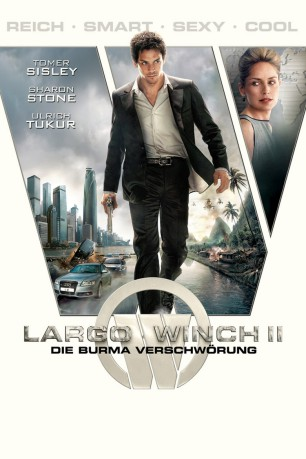

#1650 Largo Winch II - Die Burma Verschwörung
 gesehen am 13.01.2016
gesehen am 13.01.2016
 
 IMDB-Wertung: 6.2 / 10
IMDB-Wertung: 6.2 / 10  Metascore: 0
Metascore: 0 
Nach dem Tod seines Adoptivvaters wird Largo Winch für ihn selbst völlig überraschend zum Vorstand der milliardenschweren W Group ernannt. Mit seiner Entscheidung, seinen neuen Reichtum für die Gründung einer gemeinnützigen Einrichtung zu nutzen, stößt er dem Aufsichtsrat und den Aktionären vor den Kopf. Kurz darauf wird er auf dubiose Weise eines Verbrechens an der Menschheit beschuldigt, das er in seiner Vergangenheit begangen haben soll, und muss fliehen. Im Dschungel von Burma will er den Beweis seiner Unschuld erbringen.
Jahr: 2011
Dauer: 119 Minuten
FSK: 16
Land: Frankreich Studio: Sunfilm EntertainmentTonspuren: DTS - ,
Untertitel: Deutsch,
Auflösung: 1080p (1920x800) Größe: 6021 MB
Genre: Action, Thriller, Abenteuer
Regisseur: Jérôme Salle
Drehbuch: Julien Rappeneau, Jérôme Salle, Jean Van Hamme, Philippe Francq, Jean Van Hamme
Soundtrack: Alexandre Desplat
Darsteller:
Datei: X:\2-Dilogie(G-M)\Largo Winch\Largo Winch II - Die Burma Verschwörung (2011, FSK16, 1920x800).mkv seit 31.07.2015
Festplatte: HD Collection-2(A-Z)-3(A-M)
 Es gibt insgesamt 7 Filme in der Gruppe '2-Dilogie(G-M)\Largo Winch'
Es gibt insgesamt 7 Filme in der Gruppe '2-Dilogie(G-M)\Largo Winch'